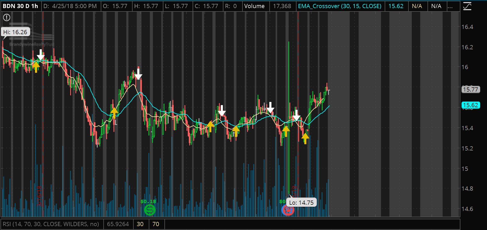

<div style="margin-right:30px; margin-left:15px; margin-bottom: 30px">
    <!-- Page Container -->
    <div class="w3-content w3-margin-top" style="max-width:1400px;">

        <!-- The Grid -->
        <div class="w3-row-padding w3-twothird">
            <!-- Left Column -->
            <h2 class="w3-text-grey">Brendan Nofs</h2>
            <div class="w3-white w3-text-grey">
                <div class="w3-container">
                    
                </div>

            </div>
            <div class="w3-container w3-card w3-white w3-margin-bottom">
                <h2 class="w3-text-grey w3-padding-16">
                    <i class="fa-fw w3-margin-right w3-xxlarge w3-text-teal"></i>Introduction</h2>
                <div class="w3-container">
                    <p>Welcome to Brendan Nofs's Leadership Portfolio. Each symbol to the right represent a different assignment
                        I've worked on throughout the semester, all of which are still in progress.
                    </p>
                    <hr>
                </div>

            </div>

            <!-- End Grid -->
            <div class="w3-container w3-card w3-white w3-margin-bottom">
                <h2 class="w3-text-grey w3-padding-16">
                    <i class="fa-fw w3-margin-right w3-xxlarge w3-text-teal"></i>Assessment</h2>
                <div class="w3-container">
                    <h5 class="w3-opacity">
                        <b>Attendance</b>
                    </h5>
                    <h6 class="w3-text-teal">
                        <i class="fa-fw w3-margin-right"></i>3.5 / 4</h6>
                    <p>I didn't miss one class period or MMG meeting throughout the semester. Earlier in the year, I set up
                        a weekly office hour meeting to stay up to date with everything. This is my highest category not
                        because of the quantity of attendance I've had, but because I have identified that not all attendance
                        is good. Around spring break, I realized that I was going into office hours for the wrong reasons.
                        I sat back one day and listed out the reasons I was continuing to go in, and almost all of those
                        reasons revolved around validation. I took this class for myself, and this helped me realize that
                        office hours were holding back my truly developing. I am very proud of my ability to realize this,
                        and while it may seem like I dissapeared towards the latter part of the semester in terms of office
                        hours, it's what I needed for myself.
                    </p>
                    <hr>
                </div>
                <div class="w3-container">
                    <h5 class="w3-opacity">
                        <b>Communication</b>
                    </h5>
                    <h6 class="w3-text-teal">
                        <i class="fa-fw w3-margin-right"></i>2.1 / 4</h6>
                    <p>I have definitely improved over the semester with my email protocol, but I wouldn't say it's anything
                        outstanding. I struggled for a while sending in emails due to the lack of feedback, until I realized
                        (like I said above) that really all I was looking for was validation. I feel much more confident
                        conducting myself in a professional manner over email, and now actually think about what the purpose
                        is behind my message. There were times I forgot about using the correct format, and it took me longer
                        than it should have to set up a signature on my phone. I didn't send a ton of emails throughout the
                        semester, but I hope to continue improving over time until it becomes second nature.
                    </p>
                    <hr>
                </div>
                <div class="w3-container">
                    <h5 class="w3-opacity">
                        <b>Deadlines</b>
                    </h5>
                    <h6 class="w3-text-teal">
                        <i class="fa-fw w3-margin-right"></i>2.9/ 4</h6>
                    <p>This was a toughest of the categories to assess myself on. On one hand, I think I did a great job of
                        setting ambiguous deadlines for myself. I kept a very organized and up-to-date schedule on Trello
                        of everything I had to do and organizing by priority. The reason I could have done better in terms
                        of this class was that some of the assignments or projects we were given were not high on my priority
                        list. For example, I have still yet to do the cultural catch-up assignment and am in the early stages
                        of my manifesto, but that's because I had more important things to do and not because I was procrastinating.
                        If I had to do it over again, I would have done it the exact same way and I'm very proud of that.
                    </p>
                    <hr>
                </div>
                <div class="w3-container">
                    <h5 class="w3-opacity">
                        <b>Participation</b>
                    </h5>
                    <h6 class="w3-text-teal">
                        <i class="fa-fw w3-margin-right"></i>2.7 / 4</h6>
                    <p>I came to every class attentive and stayed true to my goal at the beginning of the semester, which was
                        to wake up every day half an hour earlier than I normally do. This allowed me to stay more awake
                        during class and get the most out of each session. There were definitely a lot of takeaways from
                        each class that I wrote down and revisited almost every day, but I could have done a better job using
                        some of the tangible tools we were given(white hat, word dance, fractionation, SCAMPER, etc). I also
                        got a lot of value out of my MMG, where I was able to use my strengths of being analytical and level-headed
                        to guide and support my teammates throughout the semester.
                    </p>
                    <br>
                </div>
            </div>
            <div class="w3-container w3-card w3-white w3-margin-bottom">
                <h2 class="w3-text-grey w3-padding-16">
                    <i class="fa-fw w3-margin-right w3-xxlarge w3-text-teal"></i>Reflection</h2>
                <div class="w3-container">
                    <h5 class="w3-opacity">
                        <b>A Note for Dr. Friedman</b>
                    </h5>
                    <p>
                        There are so many things I've gotten out of this class, outside of the assignments or other tangible things I can present
                        in this portfolio. The quote that has stuck with me throughout the past few months is one from one
                        of the first days of class. "If I had an hour to solve a problem I'd spend 55 minutes thinking about
                        the problem and 5 minutes thinking about solutions." -Albert Einstein. I believe we discussed this
                        quote while talking about the C4 assignment, but it went so much further than that for me. My "problem"
                        was myself, and I realized that's why I've been lost is because I didn't truly understand myself.
                        This served as a catalyst for my journey for the rest of the semester to find out who I am. I'm not
                        saying I'm even close to being done on my journey, but the amount of confidence and self-motivation
                        I've gained in this class has been astounding.
                    </p>
                    <p> By no means did I take this class for the grade. Nor did I need it for any kind of requirement or reason
                        other than the fact that I thought it would be good for me. That being said, it took a long time
                        to get outside of the mindset I've been used to my entire life. The mindset that requires you to
                        give teachers exactly what they want and you'll get by with an A. I knew I would have to get outside
                        of this mindset but didn't know how hard it would be. I constantly found myself wondering if the
                        work I was doing was going to get me a good grade, not because I need it but because that's how I
                        was conditioned to behave. I was bothered by the constant worry that others were doing assignments
                        better than me and that I would fall behind. Honestly, it wasn't until a few weeks ago that let that
                        completely fall by the wayside. Only then was I driven by self-motivation, not doing work for anyone
                        else.
                    </p>
                    <p>
                        Another aspect of this class that was difficult for me to overcome is the fact that I feel different than everybody else.
                        We discussed one day how I felt like Rudy Ruettiger, surrounding by people that had something I lacked.
                        I had a lot of doubt that I could hang with these people. I lacked creativity. I didn't know how
                        to overcome that. It actually turned out to be my MMG that helped me through this. They helped me
                        realize that just because I have different strengths doesn't mean I can't do something. Working among
                        a team of different-minded people was a completely new experience for me. I'm used to coexisting
                        with other left-brained, computer kids, who operate in a similar manner. The amazing thing about
                        being different, though, is that you can cover other areas. What right- brained people lacked, I
                        could fill in for. There might be something that I'm not very good at, but it might be someone else's
                        specialty. My MMG has worked very well together, covering all angles of a situation, which we couldn't
                        have done had I not contributed my strengths. So just because I might not be as creative in the general
                        definition of the word, that doesn't mean I'm any less effective.
                    </p>
                    <p>
                        As you can probably tell by looking through my work, my goal was not to make the most aesthetically pleasing and presentable
                        finished products. Because I know I'm not even close to being finished. It was not important to me
                        for my ideas to look pleasing to you or anyone else, because I took this class for me. I know I definitely
                        could have worked harder on some of my ideas, but I still have plenty of time to do that. The purpose
                        of this portfolio isn't to show how much I've done this semester and how great I am, because it's
                        not about what you think. I've been working and progressing at my own pace and I'm really happy with
                        the improvements I've made.
                    </p>

                    <p>
                        The reason this website is designed around the theme of stocks is because creating passive income with investments has been
                        a major part of my life this semester. It came about from the personal values and envision assignments,
                        and recognizing that stability is one of my main sources of happiness. It has become an obsession
                        for me over the past few months, and it has been a priority for me above even a lot of my schoolwork.
                        It is a prime example of me living out my values pursuing what I love.
                    </p>
                    <p>
                        There have definitely been aspects of this class I've gravitated towards and other things I haven't touched on as much. But seeing
                        as I had no idea what to expect when walking into a class completely outside my known realm, I've been incredibly happy with my
                        growth over the semester and my change in mindset about the world around me. I may not have tackled every assignment as it was
                        intended, but I feel that I've made my own out of the class and experiences a lot of important life lessons. It is 
                        exactly what I wanted and more importantly needed as I'm developing through this transitional phase of life.
                    </p>

                </div>
            </div>

        </div>

        <!-- End Page Container -->
    </div>
</div>